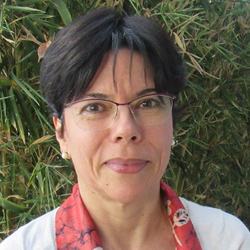

Resumo
Mercedes Maria da Cunha Bustamante é uma das mais influentes cientistas brasileiras na área de ecologia e meio ambiente. Professora titular da Universidade de Brasília (UnB) e membro da Academia Brasileira de Ciências (ABC), ela é reconhecida internacionalmente como uma das principais autoridades no estudo e na conservação do Cerrado e nas pesquisas sobre mudanças ambientais globais.
História
Mercedes Bustamante é uma das maiores cientistas e ecólogas do Brasil, reconhecida internacionalmente por seu trabalho pioneiro na preservação do Cerrado. Nascida no Chile e naturalizada brasileira, ela se formou em Biologia e tornou-se professora da Universidade de Brasília (UnB), onde dedica sua carreira ao estudo das mudanças climáticas, do ecossistema do Cerrado e do ciclo do nitrogênio. Ao longo de sua trajetória, integrou o Painel Intergovernamental sobre Mudanças Climáticas (IPCC) da ONU, entrou para a Academia Brasileira de Ciências e presidiu a CAPES, consolidando-se como uma voz fundamental na defesa da biodiversidade e da ciência brasileira.
Contribuições
- Maior referência nos estudos sobre a vegetação, o solo e a conservação do Cerrado.
- Autora de relatórios do IPCC (ONU) sobre mudanças climáticas e uso da terra.
- Ex-presidente da CAPES e integrante da Academia Brasileira de Ciências, fortalecendo a pesquisa científica nacional.
Referências
- https://www.abc.org.br/2023/05/02/mercedes-bustamante-e-premiada-com-o-faz-diferenca-na-categoria-ciencia-e-saude/
- https://pt.wikipedia.org/wiki/Mercedes_Bustamante
- https://museudapessoa.org/historia-de-vida/historia-de-vida-de-mercedes-bustamante/